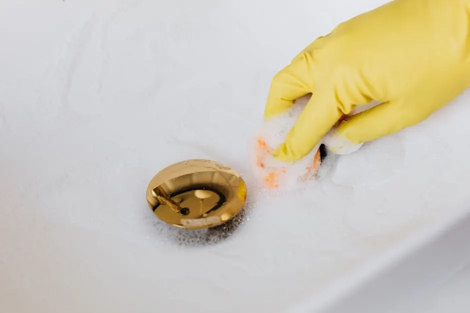
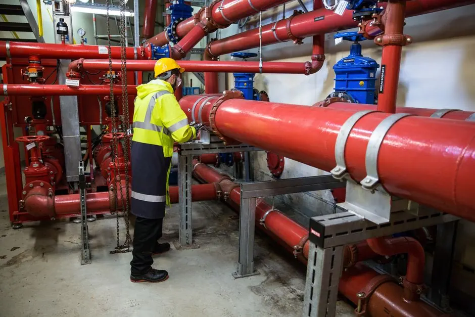
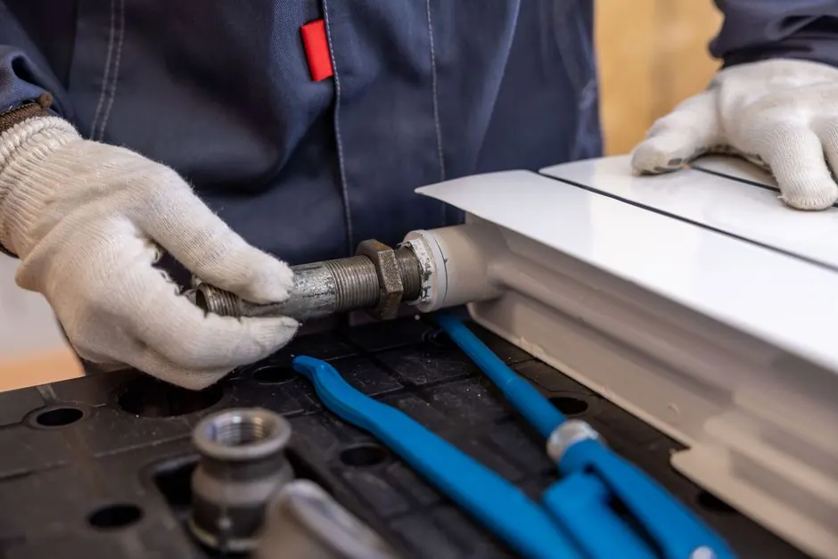
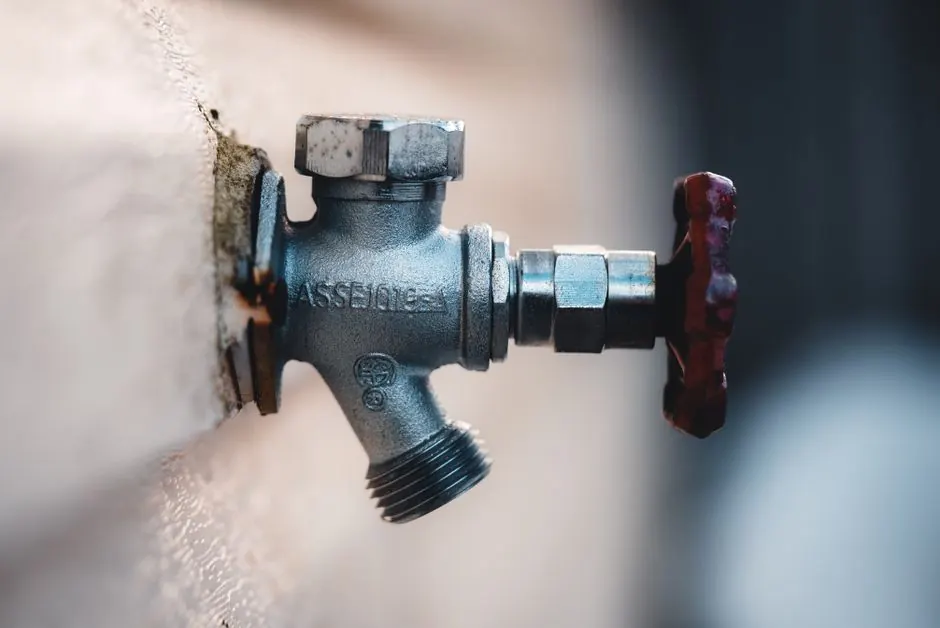
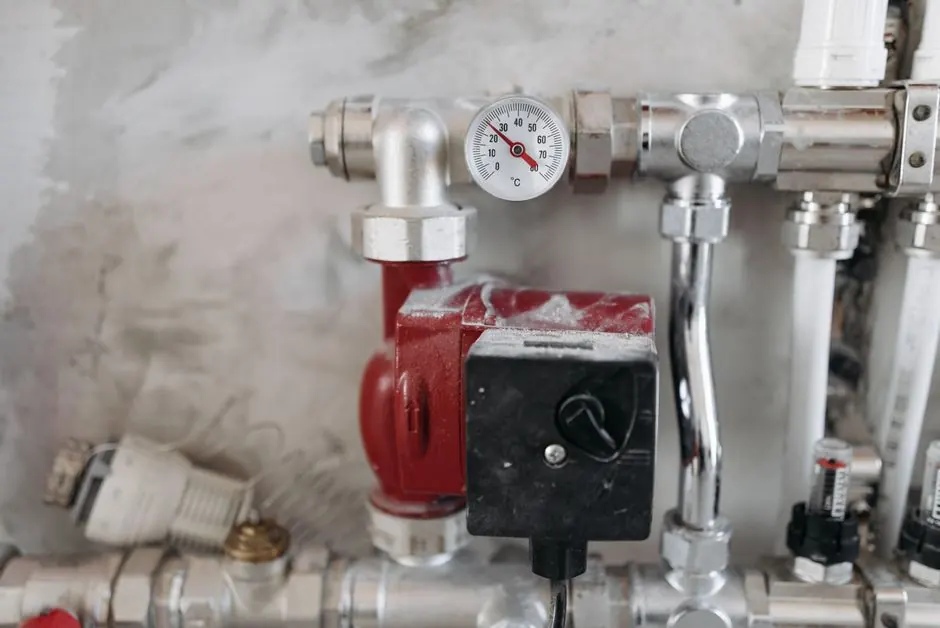
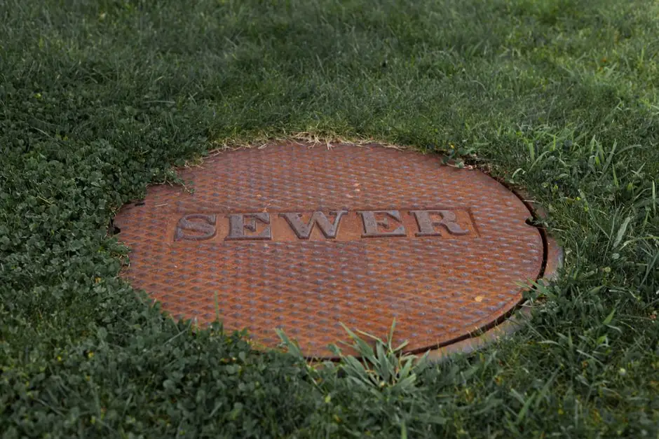

Licensed
Licensed & Bonded
Fully Insured
Insured & Bonded
24/7 Emergency
Same-Day Response
Warranty Backed
Workmanship Guaranteed in Dallas
Comprehensive Sewer Line Repair Services
Our range of Sewer Line Repair services in Dallas is designed to meet all your plumbing needs. Whether it's a small issue or a major crisis, we offer 24/7 Sewer Line Repair in Dallas to keep your home safe.

Video Pipe Inspection
View DetailsSeptic Tank Cleaning
View DetailsHydro Jetting
View Details
Trenchless Pipe Repair
View Details
Leak Detection
View Details
Sump Pump Installation
View DetailsOur Sewer Line Repair Process
Our streamlined process ensures efficient and effective repairs every time.
01
Initial Consultation
We start with a thorough assessment of your plumbing issues. Our expert technicians will listen to your concerns and inspect your system.
02
Diagnosis and Quote
Using advanced tools like sewer cameras, we diagnose the problem accurately. You'll receive a clear quote before any work begins.
03
Repair Execution
Our skilled team performs the necessary repairs using industry-leading techniques and equipment, ensuring your system is restored to optimal condition.
04
Final Inspection
After repairs, we conduct a final inspection to ensure everything is functioning correctly. Your satisfaction is our priority.
Why Choose Our Sewer Line Repair Services?
Choosing us means opting for quality and reliability in every service. Our team is dedicated to providing exceptional Sewer Line Repair in Dallas, ensuring your plumbing issues are resolved promptly.
-
Licensed and Insured Technicians All our technicians hold Texas state plumbing licenses and are fully insured. This guarantees that you receive professional service every time, with peace of mind.
-
Fast Response Times We understand that plumbing emergencies can happen anytime. Our Dallas team is available 24/7, ensuring we are there when you need us, often within an hour.
-
Affordable Solutions We provide affordable Sewer Line Replacement Dallas options tailored to your budget. Our transparent pricing means no hidden fees, just honest service.

98%
Of our customers refer us within the first year.
Frequently Asked Questions About Sewer Line Repair in Dallas
Here are some common questions we receive regarding our Sewer Line Repair services in Dallas.
What is the cost of sewer line repair in Dallas?
The cost of sewer line repair in Dallas can vary based on the extent of the damage and the specific services required. On average, homeowners can expect to pay between $200 and $1,500. We provide free estimates to give you a clearer picture.
How do I find the best sewer line repair near me in Dallas?
To find the best sewer line repair service in Dallas, look for licensed and insured professionals with positive customer reviews. Our team meets these criteria and is ready to assist you.
Can I get emergency sewer line replacement in Dallas?
Yes, we offer 24/7 emergency sewer line replacement in Dallas. Our team is always ready to respond to urgent plumbing issues to minimize damage and restore your system quickly.
How to choose a sewer line repair service in Dallas?
When choosing a sewer line repair service in Dallas, consider their experience, customer reviews, and the range of services offered. Our team has years of experience and a strong reputation in the community.
What should I do if I have a sewer line emergency?
If you experience a sewer line emergency, such as a backup or leak, turn off the water supply and call our team immediately. We provide prompt and professional service to resolve your issue.
Get Reliable Sewer Line Repair in Dallas Now
Don't wait for plumbing issues to escalate. Contact us today for a free estimate and enjoy peace of mind knowing your sewer lines are in expert hands.
Contact Us for Expert Help
Feel free to reach out to our team for any plumbing inquiries. We are available Monday through Friday, with quick response times to assist you.
Sewer Line Repair dallas
-
Phone
(866) 382-0802 -
Address
11120 Shady Trail, TX 75299, Dallas, Texas
-
Hours
Mon–Fri: 7AM – 7PM
Sat: 8AM – 4PM
Sun: Emergency Only
24/7 Emergency Available